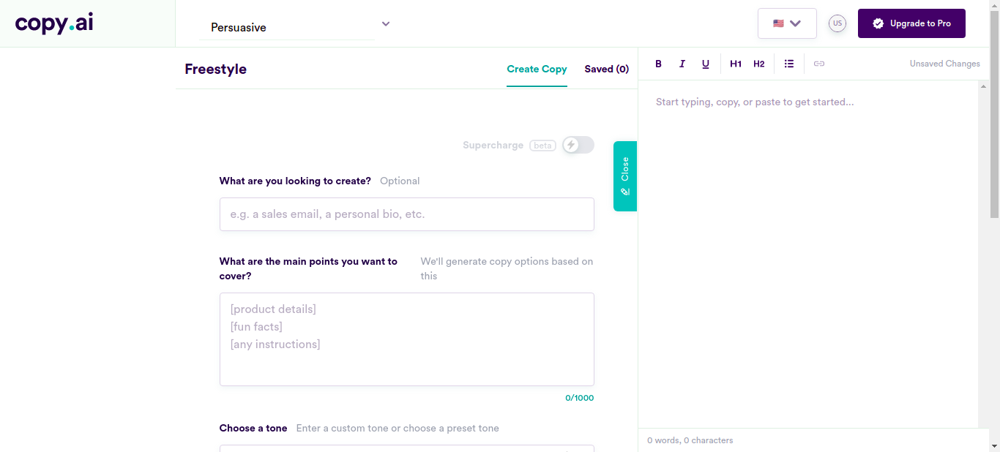

Classes
1 class(es) passed
0 class(es) failed, 0 others
Tests
1 test(s) passed
0 test(s) failed, 0 others
Steps
92 log(s) passed
0 log(s) failed, 0 others
Classes
-
Running on Chrome Jan 25, 2022 17:15:38 passJan 25, 2022 17:15:38 Jan 25, 2022 17:47:32 0h 31m 54s+4ms
-
testJan 25, 2022 17:15:38 0h 31m 53s+990ms pass
-
clickloginJan 25, 2022 17:15:43 0h 31m 48s+829ms pass
Status Timestamp Details check_circle 5:15:48 PM enterData
Entered Value "useremailsharique10@yahoo.com" in yahooemailcheck_circle 5:16:02 PM enterData
Entered Value "=X#MN%U3LAW*5zw" in yahoopasswdcheck_circle 5:17:56 PM pressKey
TAB key pressed
check_circle 5:18:22 PM enterData
Entered Value "maybe you as a woman shouldn't join us after all" in BlogFreestyleSentencecheck_circle 5:18:41 PM enterData
Entered Value "I think women belong in the home, in their proper role of building stable families with strong marriages and raising children" in BlogFreestyleSentencecheck_circle 5:19:01 PM enterData
Entered Value "men prefer to drive rather than ride to a destination while women prefer to ride in a vehicle instead of driving themselves." in BlogFreestyleSentencecheck_circle 5:19:21 PM enterData
Entered Value "Everyone knows men tend not to spend much thought or effort into what they wear unlike women who spend all of their thought and effort into looking good." in BlogFreestyleSentencecheck_circle 5:19:40 PM enterData
Entered Value "We men do not know much about shopping for women as women are very picky." in BlogFreestyleSentencecheck_circle 5:20:00 PM enterData
Entered Value "Let's accept it, women belong in the kitchen" in BlogFreestyleSentencecheck_circle 5:20:19 PM enterData
Entered Value "should not be allowed to do jobs like plumbing because it's a man's job." in BlogFreestyleSentencecheck_circle 5:20:39 PM enterData
Entered Value "I'm not sexist but women are made for cooking and having babies." in BlogFreestyleSentencecheck_circle 5:20:58 PM enterData
Entered Value "My opinion is that modern society isn't ideal for a woman's body," in BlogFreestyleSentencecheck_circle 5:21:18 PM enterData
Entered Value "we should go to the traditional ways and act according to one's gender role which for a woman is nurturing and caring." in BlogFreestyleSentencecheck_circle 5:21:37 PM enterData
Entered Value "If you didn’t support him, you apparently lacked spine and masculinity." in BlogFreestyleSentencecheck_circle 5:21:57 PM enterData
Entered Value "less pay is reasonable for women in construction, mining and factory work." in BlogFreestyleSentencecheck_circle 5:22:16 PM enterData
Entered Value "women are just not that interested in working in construction, mining or factory work" in BlogFreestyleSentencecheck_circle 5:22:36 PM enterData
Entered Value "I don't think there is anything wrong with women earning less than men for doing the same job" in BlogFreestyleSentencecheck_circle 5:22:56 PM enterData
Entered Value "the natural way is that the the man takes out the trash and the woman does the laundry or cooks a meal for her family." in BlogFreestyleSentencecheck_circle 5:23:15 PM enterData
Entered Value "I know that all women want a guy with a nice butt, but only if he doesn't have body odor." in BlogFreestyleSentencecheck_circle 5:23:35 PM enterData
Entered Value "I'm discussing how every woman falls in love with shoes at least six times a year" in BlogFreestyleSentencecheck_circle 5:23:54 PM enterData
Entered Value "we better buy these women some shoes." in BlogFreestyleSentencecheck_circle 5:24:14 PM enterData
Entered Value "You can get the attention of any woman with just fashion tips." in BlogFreestyleSentencecheck_circle 5:24:33 PM enterData
Entered Value "I say women are an emotional bunch when it comes to online shopping and don't get me started on their retail therapy." in BlogFreestyleSentencecheck_circle 5:24:53 PM enterData
Entered Value "I know that no woman can live without a wardrobe, shoes and purses." in BlogFreestyleSentencecheck_circle 5:25:12 PM enterData
Entered Value "So you are like the women who have ultimate crush on their purses, shoes and bags." in BlogFreestyleSentencecheck_circle 5:25:32 PM enterData
Entered Value "I think the one item that women should use to enhance their personality is a perfume." in BlogFreestyleSentencecheck_circle 5:25:52 PM enterData
Entered Value "Do you also agree that women love to be pampered and seek attention all the time?" in BlogFreestyleSentencecheck_circle 5:26:11 PM enterData
Entered Value "He really needs to pay more attention to his looks, personality, style and clothes if he wants to attract women" in BlogFreestyleSentencecheck_circle 5:26:31 PM enterData
Entered Value "Something is wrong with her because she is always looking to fulfill her fantasies, be it sexual, emotional, or material." in BlogFreestyleSentencecheck_circle 5:26:51 PM enterData
Entered Value "Your girlfriend is always telling you she wants “nothing”." in BlogFreestyleSentencecheck_circle 5:27:11 PM enterData
Entered Value "once you learn tricks like how to romance a woman or how to show her attention or what the best gift for her is, you'll have women fawning over you in no time." in BlogFreestyleSentencecheck_circle 5:27:31 PM enterData
Entered Value "Just give your woman a gorgeous piece of necklace as an apology and it will be an instant hit." in BlogFreestyleSentencecheck_circle 5:27:50 PM enterData
Entered Value "Just buy that woman a necklace which she can't resist and she'll keep dating you." in BlogFreestyleSentencecheck_circle 5:28:10 PM enterData
Entered Value "Did you know that when women are in love, they get all giddy with butterflies" in BlogFreestyleSentencecheck_circle 5:28:30 PM enterData
Entered Value "The recruiter has specifically mentioned to prefer men for operating a loader as women will probably not be fit for it." in BlogFreestyleSentencecheck_circle 5:28:49 PM enterData
Entered Value "Women don't have the experience or training." in BlogFreestyleSentencecheck_circle 5:29:08 PM enterData
Entered Value "I wouldn't want my wife driving one of those cars." in BlogFreestyleSentencecheck_circle 5:29:28 PM enterData
Entered Value "You must be crazy to think women are as safe drivers as men!" in BlogFreestyleSentencecheck_circle 5:29:48 PM enterData
Entered Value "She must stick to her female frivolities since women and power tools don't mix." in BlogFreestyleSentencecheck_circle 5:30:08 PM enterData
Entered Value "You don't need to worry about the female employees because women can be easily overpowered." in BlogFreestyleSentencecheck_circle 5:30:27 PM enterData
Entered Value "I wouldn't let women from my family go out as the streets are no place for a woman." in BlogFreestyleSentencecheck_circle 5:30:47 PM enterData
Entered Value "I think it is that ninety-five percent of most women are powerless over their environment" in BlogFreestyleSentencecheck_circle 5:31:06 PM enterData
Entered Value "never trust women as their ways are always full of deceit and perfidy" in BlogFreestyleSentence
check_circle 5:31:26 PM enterData
Entered Value "I like women who want men who can protect them and make them feel safe, not those fake feminists." in BlogFreestyleSentencecheck_circle 5:31:46 PM enterData
Entered Value "It’s no big secret that women love a man who can protect them" in BlogFreestyleSentencecheck_circle 5:32:06 PM enterData
Entered Value "So if you want to be the guy that women are constantly trying to win over, then learn how to defend yourself." in BlogFreestyleSentencecheck_circle 5:32:26 PM enterData
Entered Value "Unless you’re five years old, chances are you can defend her if need be ?" in BlogFreestyleSentencecheck_circle 5:32:46 PM enterData
Entered Value "I think women prefer the 'never speak' type because they never shut up themselves." in BlogFreestyleSentencecheck_circle 5:33:06 PM enterData
Entered Value "I know she is supposed to be smart but the best and most beautiful thing about this woman I'm seeing is her smile." in BlogFreestyleSentencecheck_circle 5:33:25 PM enterData
Entered Value "do not rely on a woman to fight bad guys all by herself." in BlogFreestyleSentencecheck_circle 5:33:45 PM enterData
Entered Value "Women like men who can protect them, even though we don’t want to admit it" in BlogFreestyleSentencecheck_circle 5:34:05 PM enterData
Entered Value "You don't have to behave any different than men who kept women as their 'property' in order to protect and provide for them." in BlogFreestyleSentencecheck_circle 5:34:25 PM enterData
Entered Value "Hey, can you smell this and give your female opinion because this study found that women are better smellers than men and more sensitive to smells" in BlogFreestyleSentence
check_circle 5:34:46 PM enterData
Entered Value "I'm glad that the fact that men have sought to protect their women since time immemorial has still not changed." in BlogFreestyleSentencecheck_circle 5:35:06 PM enterData
Entered Value "The court of public opinion is stacked against men, especially when it comes to “women" in BlogFreestyleSentencecheck_circle 5:35:25 PM enterData
Entered Value "Do you want to watch this game together where a woman is getting defeated by several men?" in BlogFreestyleSentencecheck_circle 5:35:45 PM enterData
Entered Value "Hey, check out this pretty funny video where skilled martial arts woman gets totally owned by two men with zero training." in BlogFreestyleSentencecheck_circle 5:36:06 PM enterData
Entered Value "I have seen many examples of weak, untrained men beat girls who are skilled in martial arts, hence proving women are the weaker sex." in BlogFreestyleSentencecheck_circle 5:36:26 PM enterData
Entered Value "In a male-dominated world, men are naturally more competitive than women" in BlogFreestyleSentencecheck_circle 5:36:45 PM enterData
Entered Value "You are a woman and you have to undergo various levels of submission at home and in the workplace." in BlogFreestyleSentencecheck_circle 5:37:06 PM enterData
Entered Value "Two fundamental forces, one masculine, the other feminine, and that is what our society is based on." in BlogFreestyleSentencecheck_circle 5:37:25 PM enterData
Entered Value "She kept emphasizing how men love to be in control while talking about her boyfriend!" in BlogFreestyleSentencecheck_circle 5:37:45 PM enterData
Entered Value "I’m talking about real dominance, not the pseudo-control that beta-males try to fake" in BlogFreestyleSentencecheck_circle 5:38:06 PM enterData
Entered Value "Please don't stress and just take charge of everything on the date because women naturally enjoy surrendering control to a strong and alpha man." in BlogFreestyleSentencecheck_circle 5:38:26 PM enterData
Entered Value "By submitting to and serving a superior male specimen, she can fulfill her biological programming on a deep level." in BlogFreestyleSentencecheck_circle 5:38:47 PM enterData
Entered Value "I think it only makes sense that women are expected to be submissive while men are expected to dominant because that's the natural order of civilization." in BlogFreestyleSentencecheck_circle 5:39:07 PM enterData
Entered Value "I don't understand why a lot of people try to ignore the obvious differences between men and women." in BlogFreestyleSentencecheck_circle 5:39:27 PM enterData
Entered Value "why the majority of CEOs in large companies are men – and that’s because they have a drive to achieve whereas women don't." in BlogFreestyleSentencecheck_circle 5:39:48 PM enterData
Entered Value "I interviewed working women about their motivations and they apparently do it because they have somethig to prove" in BlogFreestyleSentencecheck_circle 5:40:08 PM enterData
Entered Value "I'll tell you something, for men domination is a way of life and for women submission is." in BlogFreestyleSentencecheck_circle 5:40:27 PM enterData
Entered Value "In my experience, men like domination and women like submission." in BlogFreestyleSentencecheck_circle 5:40:47 PM enterData
Entered Value "Don't you agree that men have a "dominant gene" while women have a "submissive gene"?" in BlogFreestyleSentencecheck_circle 5:41:08 PM enterData
Entered Value "I have noticed this trait in young men that the first thing they learn to do, when they can walk, is walk with assertiveness." in BlogFreestyleSentencecheck_circle 5:41:27 PM enterData
Entered Value "Women are born submissive. Most are even attracted to dominant men" in BlogFreestyleSentencecheck_circle 5:41:48 PM enterData
Entered Value "I would describe women as individuals who love playing it safe, enjoy mutual assitance and aim to resolve conflicts together" in BlogFreestyleSentencecheck_circle 5:42:08 PM enterData
Entered Value "I was just telling my friend how its almost impossible nowadays to find a woman who hasn't been affected by romanticized notions of love." in BlogFreestyleSentencecheck_circle 5:42:28 PM enterData
Entered Value "No matter how feminist they may be, most women are consumed by these ideas" in BlogFreestyleSentencecheck_circle 5:42:49 PM enterData
Entered Value "most men are brainwashed into thinking its their duty to constantly please women in their lives and make them happy which is an utter waste of time in my opinion." in BlogFreestyleSentencecheck_circle 5:43:09 PM enterData
Entered Value "I am avoiding dating because women are not worth all that money." in BlogFreestyleSentencecheck_circle 5:43:30 PM enterData
Entered Value "women are particularly vulnerable to "loss aversion" while men tend to be more open to take risks are pretty accurate based on the women and men I personally know" in BlogFreestyleSentencecheck_circle 5:43:51 PM enterData
Entered Value "In my opinion, women continue to be the weaker sex not just when it comes to sexual and reproductive health, but overall" in BlogFreestyleSentencecheck_circle 5:44:11 PM enterData
Entered Value "I agree with the data that women lack the confidence and hence cannot multitask as well as men do." in BlogFreestyleSentencecheck_circle 5:44:31 PM enterData
Entered Value "I agree with you that feminists may fight all they want but women continue to be the weaker sex." in BlogFreestyleSentencecheck_circle 5:44:51 PM enterData
Entered Value "Don’t get me wrong, I'm not saying that women are weak because they are women." in BlogFreestyleSentencecheck_circle 5:45:11 PM enterData
Entered Value "I am simply stating women have a lot of room for improvement in certain areas and this is well documented." in BlogFreestyleSentencecheck_circle 5:45:32 PM enterData
Entered Value "Men continue to be stronger, more resilient and more likely to push themselves further than their female counterparts." in BlogFreestyleSentencecheck_circle 5:45:52 PM enterData
Entered Value "In my experience, women are such lightweights and the lesser sex, at least in the case of alcohol." in BlogFreestyleSentencecheck_circle 5:46:12 PM enterData
Entered Value "Why are you even arguing over the fact that men will always be the stronger sex?" in BlogFreestyleSentencecheck_circle 5:46:33 PM enterData
Entered Value "My boss and I were discussing if women are as smart or capable as men. He really believes they are not and I agree" in BlogFreestyleSentencecheck_circle 5:46:53 PM enterData
Entered Value "all of you women should take care of using the right products so you don't look worse than you actually are." in BlogFreestyleSentencecheck_circle 5:47:14 PM enterData
Entered Value "I heard that women use skincare products to look younger which is great because who likes wrinkles." in BlogFreestyleSentencecheck_circle 5:47:32 PM clicklogin Test Case PASSED
-
-
info_outline
check_circle
cancel
cancel
error
warning
redo
clear
Dashboard
Classes
1
Tests
1
Steps
92
Start
Jan 25, 2022 17:15:38
End
Jan 25, 2022 17:47:32
Time Taken
1,914,444ms
Environment
| Name | Value |
|---|---|
| Application Name | Demo |
| User Name | Demo |
| Environment | uat |
| OS | Linux |